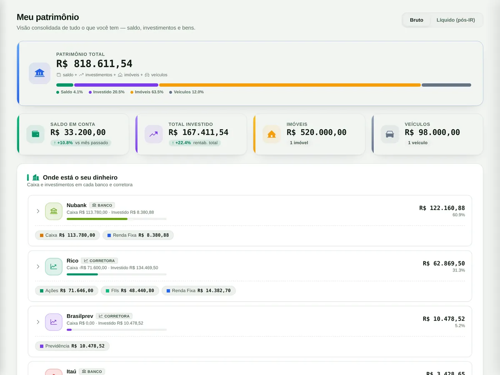

1 Onde você está
O número que ninguém sabe de cabeça
Conta corrente, corretora, o apartamento, o carro. A Appliquei soma tudo e mostra quanto há em cada instituição — o total que a planilha nunca fechava.
- Saldo por banco e por corretora, e não um caixa genérico onde o dinheiro some.
- Imóveis e veículos no mesmo total, já com o financiamento abatido.
- Bruto ou líquido de IR, com o imposto estimado a partir do seu preço médio.

Tela real da Appliquei. Dados de demonstração.